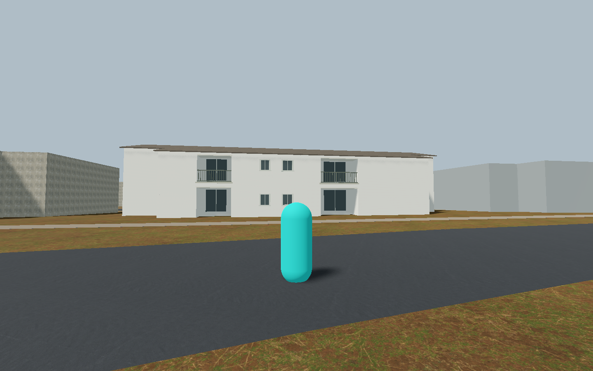
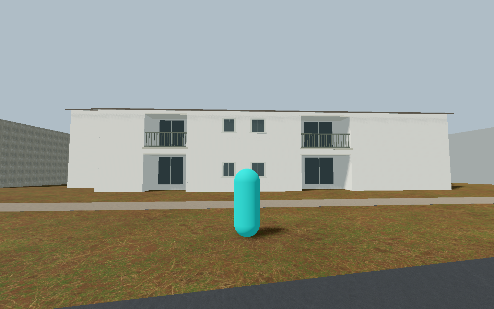

Static visual PASS; scoped experimental local-origin mechanics PASS. Normal loader unchanged; no release or recognition credit.43/213 recognized and33 family remain unchanged.
Scope and reuse limits · Original provenance · Draft gallery


Original September24 captures; not new local-origin009 imagery. Occluded lower frontage is production inference. Private reference pixels are excluded.